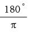
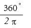
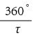
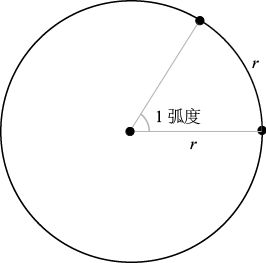
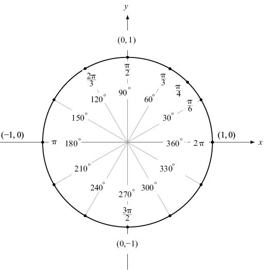
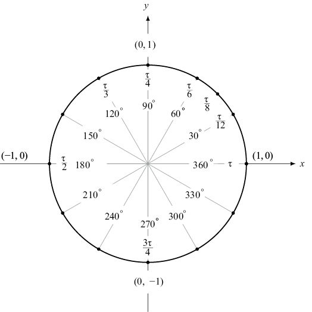
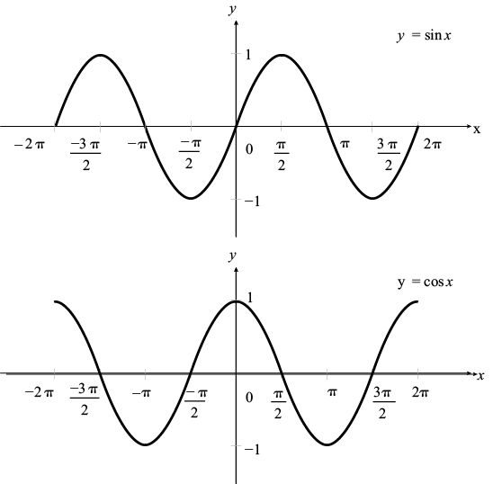
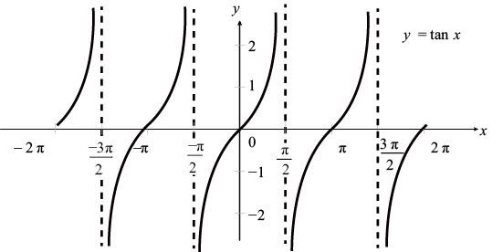

到目前为止，我们在讨论几何学与三角学问题时，所有角的度数都在0°~360°这个范围内。但是，如果我们认真地观察单位圆，就会发现360这个数字没有什么特别之处。古巴比伦人之所以选择这个数字，可能是因为他们使用的是六十进制，而且这个数字与一年的天数比较接近。实际上，在数学和大多数科学领域，人们更喜欢使用“弧度”（radians）作为角的度量单位。弧度的定义是：
2π弧度 = 360°
或者
1弧度 =

对于“拥τ派”来说，由于 τ = 2π，因此：
1弧度 =

=
换算成数字的话，1弧度约等于57°。为什么弧度比度用起来更加得心应手呢？在一个半径为r的圆上，2π弧度的角对应的弧长就是整个圆周，即2πr。如果我们把这个角分成若干等分，我们得到的弧长就是2πr的若干分之一。具体来说，1弧度对应的弧长为2πr (1 / 2π) =r，m弧度对应的弧长为mr。总之，对单位圆而言，角的弧度与角对应的弧长相等。这非常方便！

在下图的单位圆中，我们以弧度为度量单位标出了一些常用的角。

下面给出 τ 版本示意图，供大家比较。

从上图可以发现部分数学界人士喜爱 τ 胜过π的原因。90°是1/4个圆，换算成弧度就是 τ/4；120°是1/3个圆，换算成弧度就是τ /3。的确，人们之所以选择 τ 这个字母，是因为它很容易让人们联想到“turn”（一圈）这个单词。例如，360°表示一个圆圈，弧度是τ；60°表示1/6个圆圈，弧度是 τ /6。
此外，大家还会发现，用弧度替换度之后，三角函数的计算公式会变得简洁许多。例如，我们可以通过下列公式来计算正弦和余弦函数的值：
sin x = x – x3/3! + x5/5! – x7/7! + x9/9! – …
cos x = 1 – x2/2! + x4/4! – x6/6! + x8/8! – …
但是，x必须以弧度为度量单位，上述公式才成立。在微积分中，我们将发现正弦函数sin x 的导数就是其对应的余弦函数cos x。同样，前提条件也是x的单位必须是弧度。在画三角函数 y = sin x 和 y = cos x 的图像时，x通常以弧度为单位。

由于正弦和余弦函数具有循环的特性，因此它们的图像每隔2π个单位就会重复一次。（“拥τ派”再得一分！）之所以如此，是因为角 x + 2π与角x其实是一回事儿。我们称这些图像的周期是2π。此外，如果将余弦函数图像向左移动π /2个单位，就会与正弦函数图像完全重合。这是因为π /2弧度等于90°，也就是说：
sin x = cos (π /2 – x)
= cos (x – π /2)
例如，sin 0 = 0 = cos (– π /2)，sin π /2 = 1 = cos 0。
因为tan x = sin x / cos x，所以在cos x = 0时（x为π /2的奇数倍时）tan x无解。如下图所示，正切函数图像的周期是π。

综合运用正弦函数和余弦函数，几乎可以为所有呈现周期性变化的函数绘制图像。因此，在为气温等季节性变化、经济数据以及声波、水波、电波、心率等物理现象建模时，三角函数图像都可以发挥极其重要的作用。
最后，我再表演一个魔术，将三角学与π之间的神秘联系展现给大家。在计算器上输入尽可能多的5，我的计算器最多可以输入16个5，即5 555 555 555 555 555。接下来，取这个数字的倒数，我的计算器给出的答案是：
1 / 5 555 555 555 555 555 = 1.8×10–16
按下计算器上的正弦键（角度模式），然后读出得数的前几位数字（如果前面是一串零，那么统统忽略不计）。我的计算器上显示的是：
3.141 592 653 589 8×10–18
你会发现这些数字（在小数点后面、这些数字前面，有17个零）正好是π的前若干位数！事实上，如果你一开始在计算器中输入任意多个5（不能少于5个），最后的结果就是π。
通过本章的学习，我们发现三角学可以帮助我们更好地理解三角形和圆。三角函数彼此之间形成了各种各样美轮美奂的关系，它们与数字π之间还有着千丝万缕的联系。在接下来的一章，我们将会发现三角函数与另外两个重要的数字同样有着不可分割的联系。这两个数字就是无理数e = 2.718 28…和虚数i。
[1] 作者特意使用“tan gent”（户外运动爱好者）这个表达，目的是让读者联想到“tangent”（正切）一词。——译者注
[2] 勾股数，也叫“毕氏三元数”。——译者注